ء-حماية e-Himaya
تقرير المرحلة PL: مخططات التدخل الملوّنة حسب الخطر تُعرض على الشاشة (PL1)، والبرمجة اليومية والأسبوعية والشهرية لكل ولاية بنماذجها واعتمادها (PL2)
1. أين تقع هذه المرحلة من مسار المشروع
التبليغ
←
المعالجة
←
التحليل
←
مؤشرات الأداء KPI
←
التنبؤ بالذكاء الاصطناعي
←
اتخاذ القرار
- المعالجة: كل ولاية تبرمج أنشطتها لليوم والأسبوع والشهر، وتتابعها نشاطا نشاطا.
- مؤشرات الأداء: نسبة إنجاز البرمجة لكل ولاية، يراها المركز والوالي والوزير.
- اتخاذ القرار: المخطط الساري لخطر المحور يُفتح على شاشة القاعة في لحظته، دون بحث ولا تنزيل؛ ومنه تقرأ نافذة أصحاب القرار (L4) المخطط والبرمجة الجارية.
2. مراجعة ← تصميم ← تطوير
الطلب: «جلب المخططات بصيغة PDF مرة واحدة ويتم عرضه على الشاشة حسب الحاجة إليه ثم صياغة البرمجة باختلاف المدة». وأجاب يامن عن أسئلة التصميم: اللون نوع الخطر (الأزرق للفيضانات)، والبرمجة تشمل كل الأنشطة، و«كل ولاية ولها خصوصيتها» في الاعتماد. ثم: «تسجيل برمجة كموديل نظرا لتكراره عوضا عن إعادة كتابته».
الأمن: المخطط يُقرأ بصلاحيات السجل نفسها (الوطني للقاعات، والملحق لقاعة ولايته والمركز). الملف يأتي من الخادم دون تخزين (no-store و nosniff)، ولا يُعرض على الشاشة إلا PDF (غيره 415)، وكل فتح مسجَّل في التدقيق. يعمل PDF.js في عامل من الموقع نفسه فلا تتغير سياسة أمن المحتوى. البرمجة تقرؤها قاعة ولايتها والمركز وحدهما بأمن مستوى الصفوف، والوالي والوزير يرون نسبة الإنجاز وحدها لأن الأنشطة تحمل أسماء المسؤولين. والطبقات الحساسة لا تمر بأي من الصفحتين.
PL1: مخططات التدخل حسب الخطر
- المخاطر وألوانها: ستة مخاطر أولية، الأزرق للفيضانات من اللجنة والبقية تؤكدها القاعة المركزية أو تغيّرها من تبويب «المخاطر وألوانها» (الأسماء بالعربية والفرنسية والإنجليزية، اللون، الأيقونة، الترتيب، الإيقاف). النص على اللون بالأبيض أو بالأسود حسب التباين.
- صفحة «مخططات التدخل»: بطاقة لكل خطر بلونه، فيها المخطط الوطني الساري وملاحق الولايات، وزر «مخطط جديد لهذا الخطر» يفتح استمارة السجل مملوءة بالنوع والخطر. يُرفع الملف مرة واحدة ويبقى ساريا حتى تلغيه نسخة جديدة.
- العرض على الشاشة: صفحة صفحة على عرض الشاشة، بالتكبير والتصغير، ورقم الصفحة ومفاتيح التنقل، وفهرس المخطط، والبحث في النص بتجاهل التشكيل وأشكال الألف، وملء الشاشة لشاشة القاعة الكبيرة.
- حسب الحاجة: المحور المفتوح يعرض «مخططات التدخل السارية لهذا الخطر»، الوطني ثم ملاحق ولايات المحور، بزر «عرض على الشاشة».
PL2: البرمجة باختلاف المدة
- الفترات: لكل ولاية برمجة يوم وأسبوع (من الاثنين) وشهر، وتقويم بلون نوع النشاط، ونسخة للطباعة.
- الأنشطة العشرة: مناوبة، دورية، تمرين، زيارة وقاية، صيانة، تكوين، تحسيس، تفقد الجاهزية، اجتماع، أخرى؛ بالوحدة والمكان والمسؤول والأعوان والموارد من دليل السجل والمخطط المرتبط.
- دون إعادة كتابة: التكرار كل يوم أو أيام العمل أو كل أسبوع، ونسخ الفترة السابقة، ونماذج البرمجة: تُحفظ أي برمجة نموذجا باسم، وتُطبَّق على برمجة مسودة أو تُنشأ بها برمجة جديدة مباشرة.
- الاعتماد الخاص بكل ولاية: نشر مباشر، أو رئيس القاعة، أو رئيس القاعة ثم المركز؛ تُحفظ الطريقة مع البرمجة عند إرسالها. والرد بسبب في كل مرحلة.
- المتابعة: كل نشاط منجز أو مؤجل أو ملغى بسبب، ومن علّمه ومتى؛ ونسبة الإنجاز لكل ولاية.
3. لقطات [SIM]
مخططات التدخل لعون القاعة الجهوية نهارا، ثم للقاعة المركزية ليلا، وتبويب المخاطر وألوانها:
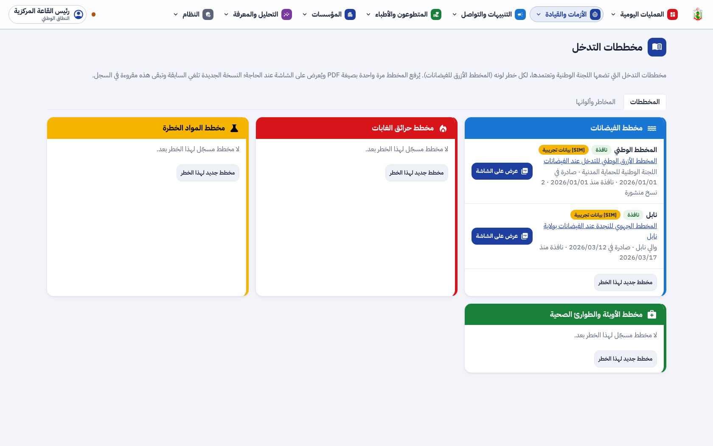
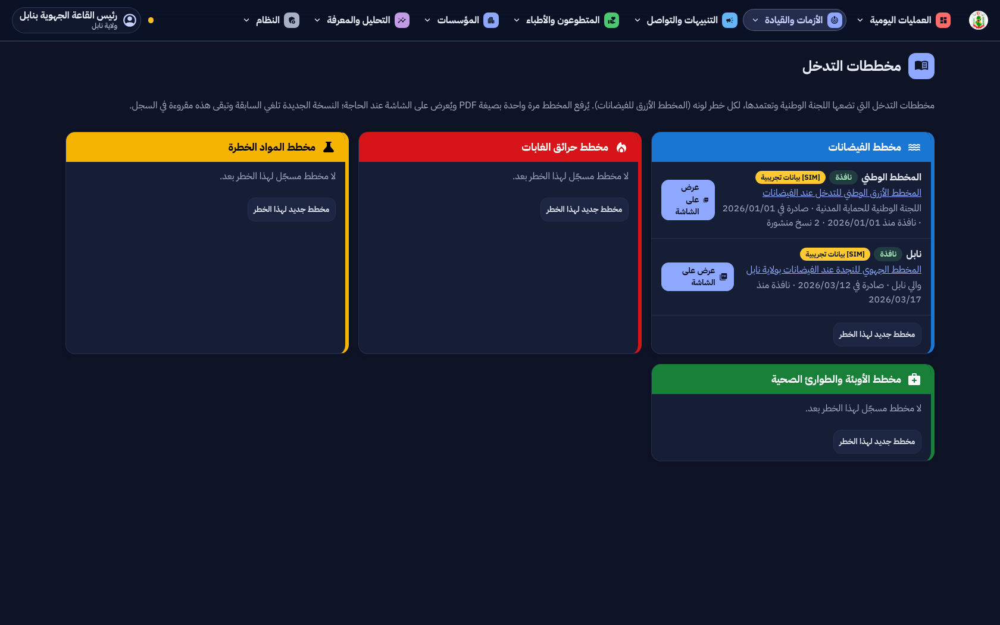
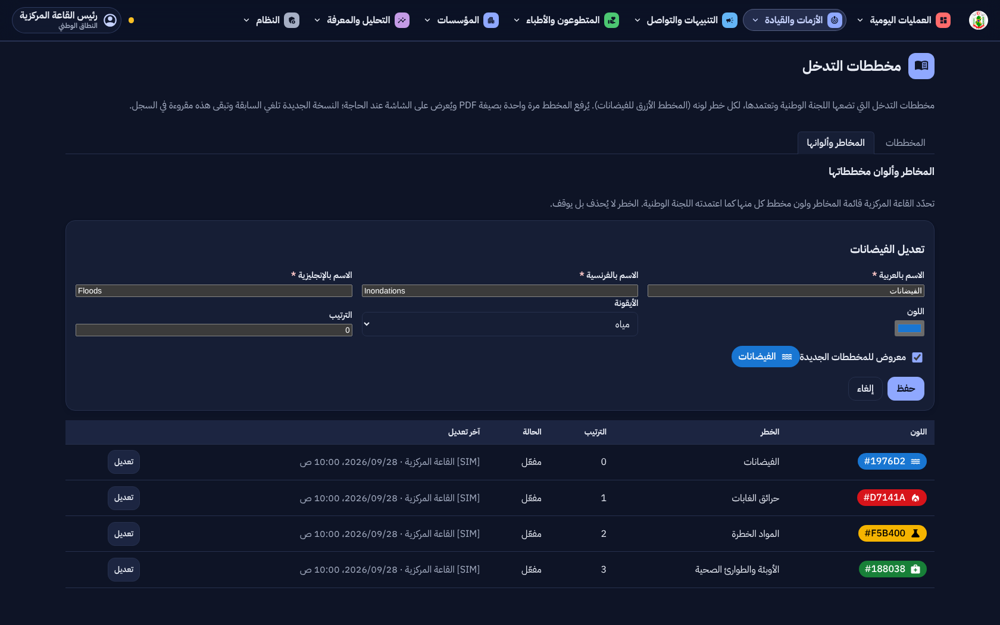
المخطط الأزرق للفيضانات على الشاشة نهارا، ثم البحث عن «الإيواء» في نصه ليلا:
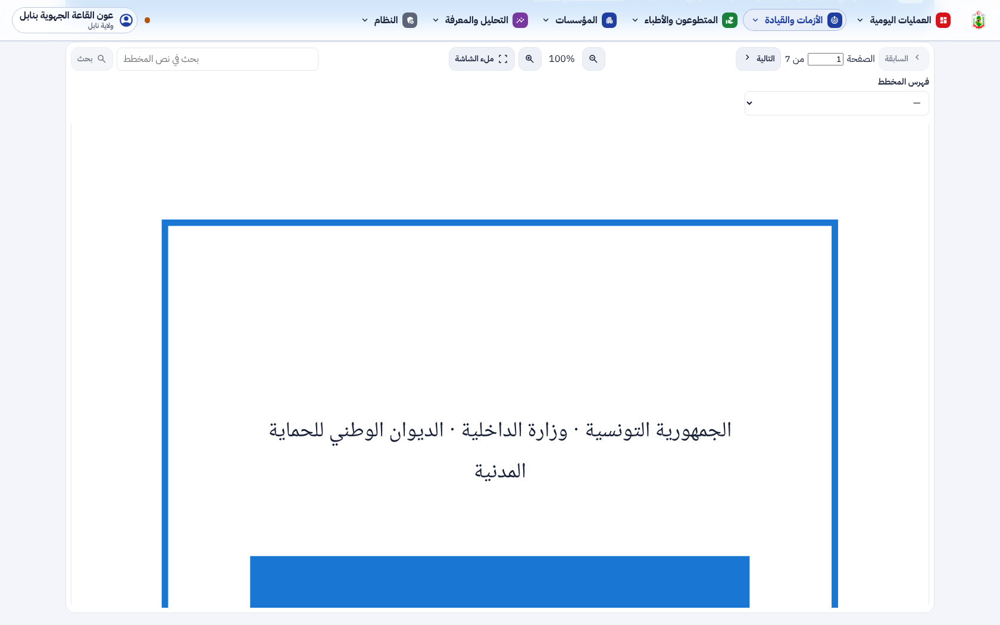
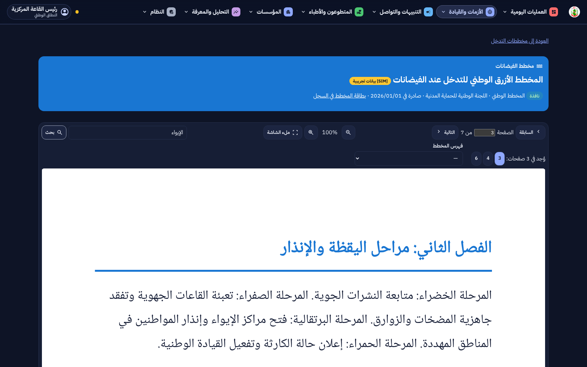
المحور المفتوح بنابل ومخططات خطره السارية:
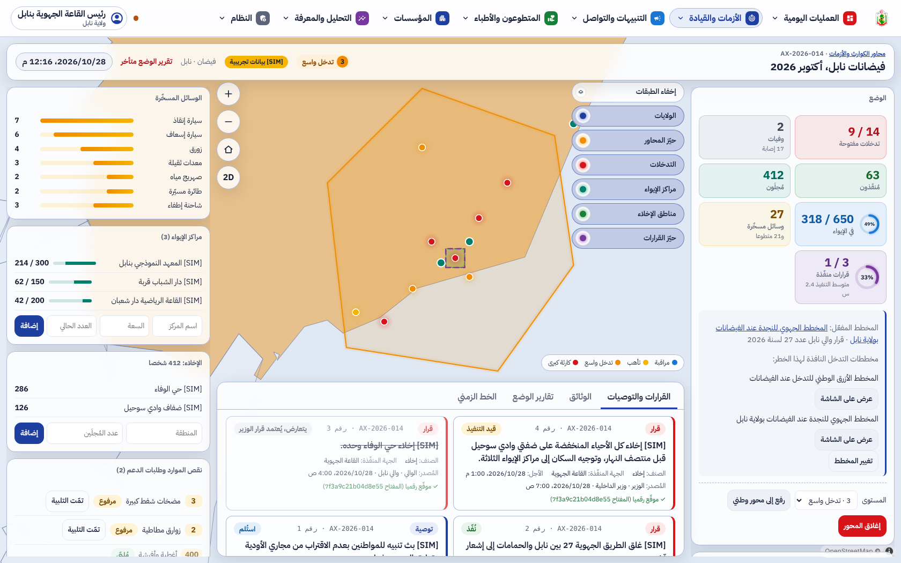
برمجة الأسبوع نهارا، والشهر نهارا، ونشاط مؤجل بسببه ليلا:
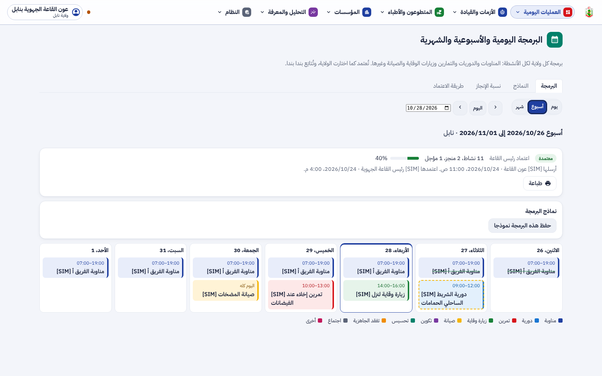
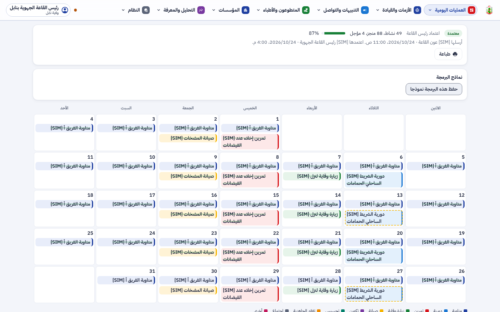
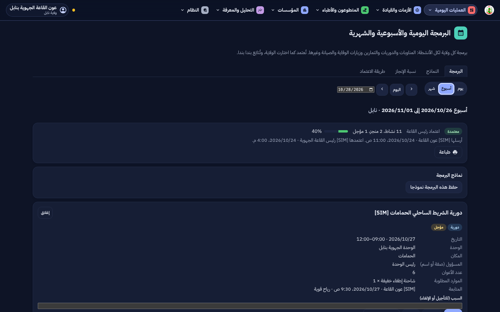
إضافة نشاط متكرر إلى مسودة ليلا، ثم الاعتماد ليلا:
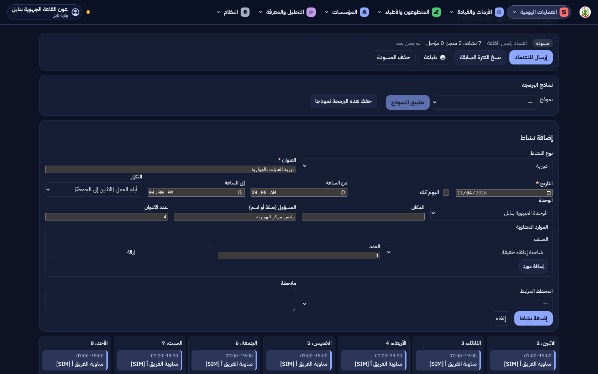
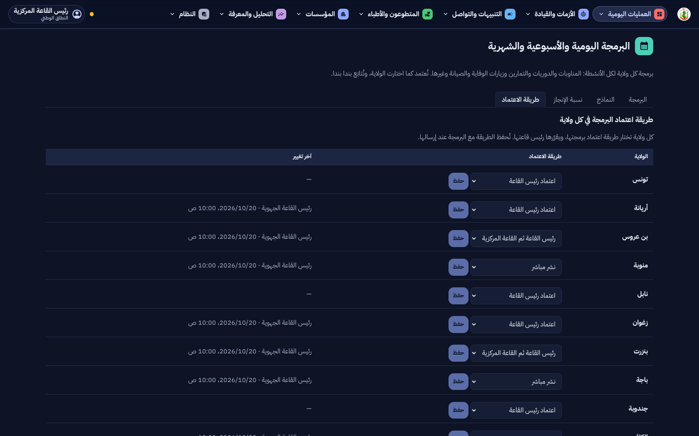
النماذج: إنشاء برمجة جديدة من نموذج نهارا، وقائمة النماذج ليلا:
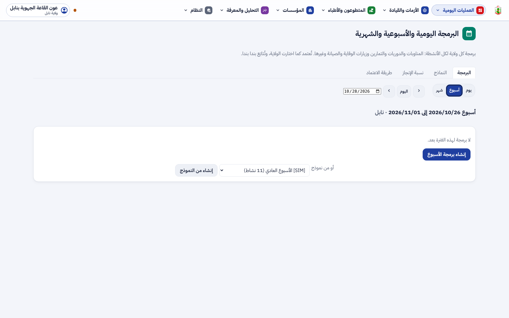
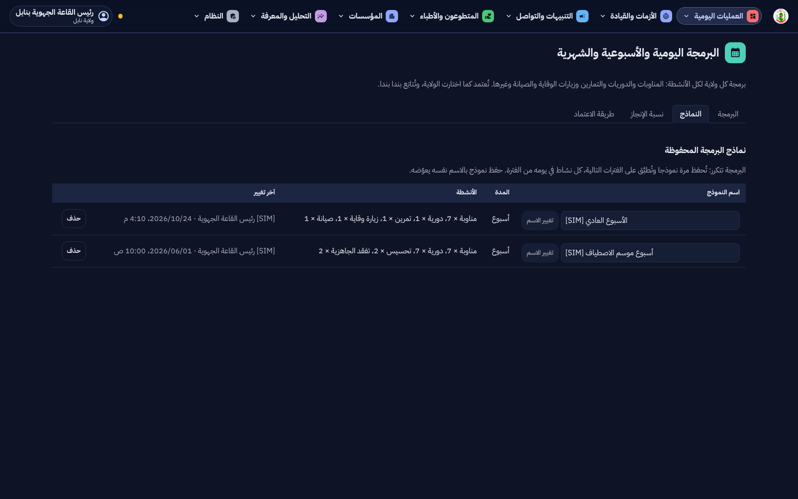
نسبة الإنجاز للقاعة المركزية، ثم للوالي (ولايته فقط، دون الأنشطة):
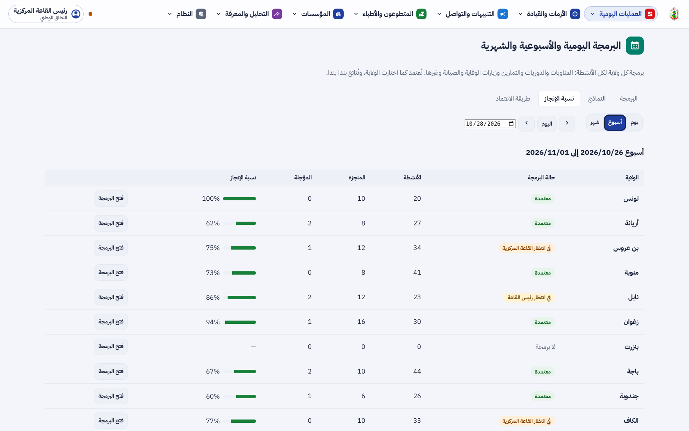
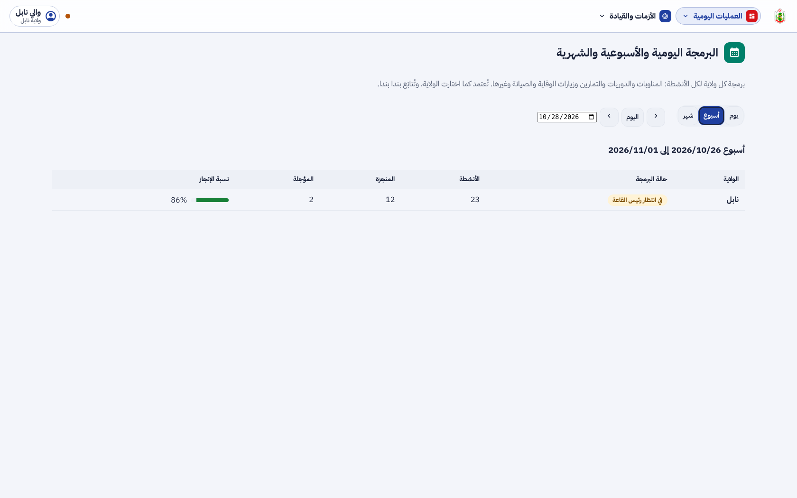
4. التقدم لكل جزء
| البند | الحالة | التقدم |
|---|
| F-DSH-74 صفحة مخططات التدخل والمخاطر وألوانها | منجز (PL1) |
|
| F-DSH-75 عرض المخطط على الشاشة، ومن المحور | منجز (PL1) |
|
| F-DSH-76 البرمجة اليومية والأسبوعية والشهرية ومتابعتها | منجز (PL2) |
|
| F-DSH-77 نماذج البرمجة | منجز (PL2) |
|
| F-DSH-78 الاعتماد الخاص بكل ولاية ونسبة الإنجاز | منجز (PL2) |
|
| F-SRV-26 و F-SRV-27 والقاعدة BR-07g | منجز |
|
| البرمجة في تطبيق الأعوان والتذكير (PL-1 و PL-2) | للدراسة |
|
تقدم المرحلة PL: 100%. التالي: نافذة أصحاب القرار (L4) ثم التمارين (L5).
5. المحاكاة [SIM]
- [SIM] «المخطط الأزرق الوطني للتدخل عند الفيضانات» في اللقطات ملف تجريبي من سبع صفحات كُتب للعرض، وليس مخطط الديوان.
- [SIM] البرمجة والأنشطة والنماذج والأسماء في اللقطات مختلَقة.
- ألوان المخاطر غير الفيضانات اقتراحات أولية تنتظر تأكيد القاعة المركزية.
6. الاختبارات المطبقة
| المكوّن | العدد | النتيجة |
|---|
| الخلفية (pytest) | 971، منها test_plans.py (3) و test_schedule.py (5) | ناجحة (2 متخطّاة كالعادة) |
| الترحيلات | صعودا ونزولا ثم صعودا حتى 0062 | ناجحة |
| لوحة القيادة (vitest) | 542، منها المخططات والعارض والبحث في النص والبرمجة والنماذج | كلها ناجحة |
| لوحة القيادة (Playwright مع axe) | 74، منها صفحة المخططات والعارض والبرمجة نهارا وليلا | كلها ناجحة، دون أي مخالفة |
ruff و mypy و eslint و tsc، و OpenAPI و ERD | — | لا ملاحظة |
- العارض: غير PDF يُرفض (415)، والخطر لا يوضع إلا على مخطط، والخطر الموقوف لا يُختار لمخطط جديد.
- البرمجة: كل ولاية ترى برمجتها وحدها والمركز يرى الكل؛ الوالي والوزير لا يصلان إلى الأنشطة؛ مسار الاعتماد بالطرق الثلاث؛ تعديل البرمجة المعتمدة لرئيس القاعة وحده.
- النماذج: الحفظ بالاسم نفسه يعوّض، والتطبيق يضع كل نشاط في يومه، والوحدة أو المخطط المحذوفان يُتركان فارغين.
- الكتابة العربية: ملف PDF يطبعه متصفح يحفظ النص حرفا حرفا من اليمين إلى اليسار؛ العارض يرسمه في مكانه ويبحث فيه بالترتيبين.
8. المخرجات المحيَّنة
- الملف الوصفي V23 (docx و pdf) في
spec/: F-DSH-74 إلى 78 و F-SRV-26 و 27، القاعدة BR-07g، 477 مسارا و576 عملية، الاختبارات، PDF.js في التقنيات، القرار، خارطة الطريق، ومصطلحات المخطط والبرمجة والنموذج.
- مخططات UML في
diagrams/: مخطط أصناف جديد للمخاطر والبرمجة (26)، وتسلسلا عرض المخطط (64) والبرمجة بنموذجها واعتمادها (65)، وحالات البرمجة والنشاط (66)، وحالات الاستعمال S50 إلى S55 في مخطط القاعة.
- العرض للمسؤولين في
presentation/: 42 مرحلة، الاختبارات، وخارطة الطريق.
- مرجع التصميم مُعاد توليده بألوان المخاطر وألوان الأنشطة والأيقونات الجديدة: design-reference.html.
- سجل الإصدارات، القائمة المؤجلة (§3.7)، ودليلا التنصيب (الحزمة
pdfjs-dist والترحيلان 0061 و 0062)، واللقطات في screens/pl/.
9. ملاحظات وانحرافات
- اعتُمدت النسخة legacy من PDF.js لأن النسخة الحديثة تحتاج متصفحات أحدث من متصفحات بعض القاعات.
- العارض يستعمل دائما الخطوط المضمَّنة في الملف، فلا تنفصل الحروف العربية إن كان على الجهاز خط بالاسم نفسه.
- المخطط بغير صيغة PDF (Word أو Excel) يبقى في السجل للتنزيل، ولا يُعرض على الشاشة (PL-4).
- البرمجة لا تظهر بعدُ في تطبيق الأعوان (PL-1)، ولا تذكير قبل النشاط (PL-2).
10. ما يلي
الدمج، ثم نافذة أصحاب القرار (L4) التي تعرض المخطط الساري للمحور والبرمجة الجارية وتبحث في الموارد داخل حيّز المحور، ثم التمارين [SIM] (L5).